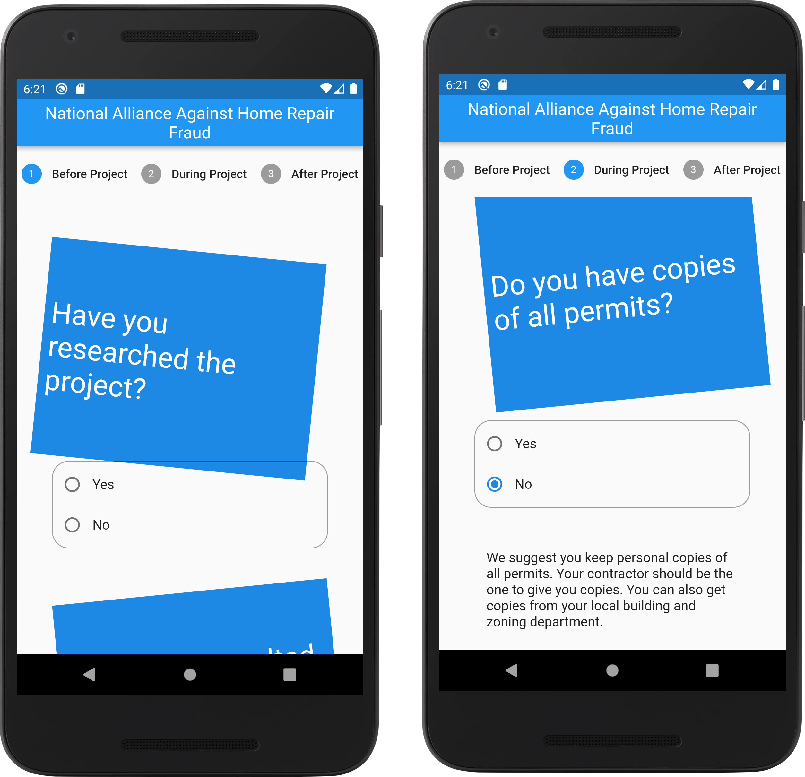
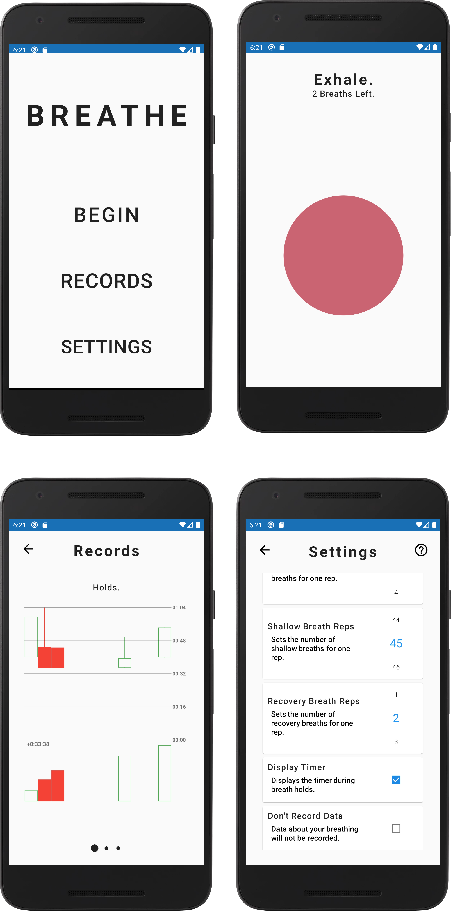

Curriculum Vitae
Jim Brunt
Summary
 Jim Brunt.
Jim Brunt.
Flutter Developer.
Jim is an exceptionally creative and highly flexible professional with more than twelve
years of experience. His expertise lies not only in designing, coding, testing, and
debugging programs for clients' specific needs, but also in providing excellent customer
service, sales, and tutorship. Jim has successfully partnered with professional
managers, computer science students, artists, and persons with special needs to provide
training, technical solutions, and direct support.
What sets Jim apart is his ability to see the big picture; he understands that technology is not an end unto itself but a tool that can be used to achieve business goals and objectives. With this perspective in mind he is always able to provide sound advice as well as innovative technical solutions that meet the client's specific needs.
Jim's intelligence and creativity set him apart from the pack, and he strives to use them to the best of his ability. He is motivated by a desire to help others, and believes that through teamwork, anything is possible.
Education
Jim has always been a passionate learner. He didn't follow the traditional path of going to college and getting a degree, but instead chose the courses that interested him and which he enjoyed. By picking up odd jobs and delivering pizza for his local shop, Jim worked his way through college. North Carolina State University chose to end Jim's enrollment, as he was earning too many credits-by-examination. However, this hasn't stopped him from continuing his education. Jim takes online courses through Coursera and Youtube lectures, as well as subscribing directly to professors on Patreon. His interests range from art to economics, mathematics to classic literature - there's nothing that Jim doesn't want to learn about!
North Carolina State University (2014)
Coursework Completed: Discrete Math CSC, C Software Tools, Data Structures CSC
Wake Technical Community College (2010-2013)
Coursework Completed: Calculus I, II, III, Physics with Calculus I, II, Differential Equations, C# Programming, Advanced C++ Programming, Computer-Aided Design, Printmaking
Work History
Flutter Developer - National Alliance Against Home Repair Fraud (2022)

National Alliance Against Home Repair Fraud.
Lead developer and designer for the NAAHRF's cross platform mobile app redesign.
Used Greg Ulmer's metaphysics
of Electracy, an aesthetic theory that
understands a user’s interaction with a
smart phone app to be a process of material
semiosis that travels along the axis of
attraction and repulsion. The process of
material semiosis is when something is
changed because of a sign. What I am trying
to change with this app is the user’s apprehensions, fears,
and repulsion to the process of properly
hiring a contractor for home repairs.
Habilitation Technician (2018 - 2022)
Directed support for teens with special needs and implemented goal-based outcomes for community inclusion. Performed record-keeping and data entry. Received Registered Behavioral Technician (RBT) training. Advocated for clients and co-workers as a front-line worker. CPR/First Aid/Nonviolent Crisis Intervention certified.
Flutter Developer - Breathe (2017)
 Breathe. Lead developer and designer for an application to aid with breathing exercises. This app was for a client who was interested in the Tummo techniques popularized by Wim Hof. Used color theory, and an understanding of haptics to expand this exercise into a cross-platform mobile application using Flutter and SQL.
Game Developer - Hedgehog (2016)
Lead developer and designer for a video game written for the COSMAC VIP (1977) using the language OCTO. It is a puzzle game. My grandma came up with the concept. I learned about bit-packing, bit-shifting, and juggling registers. I also learned how to code for a simple hardware sprite system.
Marketing Director - Stokvel (2016)
Marketed the idea of distributed savings collectives and credit clubs based on the South African Stokvel model. Educated community members on technology-related topics relating to finance. Did not give financial advice. This project was dissolved due to legislative enactment of the NC Money Transmitters Act.
Computer Science Tutor (2012 - 2018)
Tutored college students in computer science and computer programming skills. Whenever their moms see me out in the community, I get a lot of love, which I really enjoy. I tutor because I want my students to be able to use their skills to get good jobs and be successful in their careers. I also tutor because I enjoy helping people learn new things and seeing them progress in their studies. When my students succeed, it makes me feel like I've succeeded too.
ID Tech Camps Instructor - UNC Chapel Hill (2011)
Developed curricula and taught computer programming, digital video production, and robotics to students aged 12-17. Worked with groups of five to seven kids at a time. It was my first time teaching and I had a great summer.
Freelance Helpdesk/Tech Support (2010 - 2016)
Performed a wide variety of technical tasks for local businesses. Software and hardware support. Broad knowledge base garnered quick and effective solutions for clients. Custom solutions with software development skills. Wrote scripts, scrapers, and automation programs.
Pizza Delivery - Stromboli's (2007 - 2010)
Delivering food before GPS. We used map-books and when they would build a new neighborhood, I would draw in new streets and add their location to the end of the index. Customer service and point of sale experience.
Contact
Please get in touch!
References are available upon request.